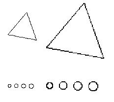

|
Design for the Macintosh DisplayYour icons must look good at the current display resolution. You should use straight lines and 45-degree angles for the best appearance. Curves don't work well because they make the edges appear jagged. Figure 8-12 shows the jagged effects that curves and angles other than 45 degrees produce.Figure 8-12 Certain shapes don't work well  |
|
|
Three-dimensional effects in icons are difficult to achieve in the Macintosh interface because they require shading and more angled lines. A large percentage of users have black-and-white monitors and thus complex shading may not display very well on their screens. If you decide to attempt to incorporate three-dimensional effects in your icons, make sure that a professional visual designer works on the design to ensure aesthetic integrity and compatibility with the Macintosh interface appearance. |